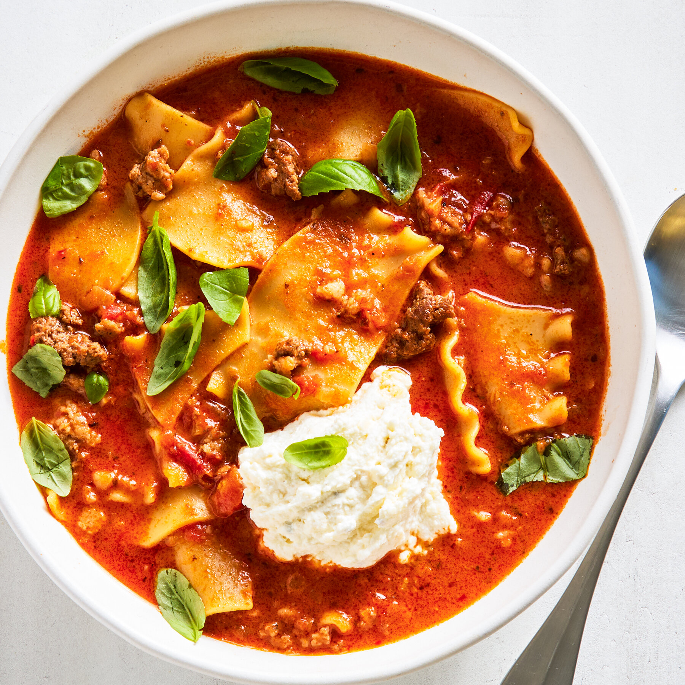

This simple, one-pot soup delivers all the comfort of a classic lasagna with very little of the work.
A jar of marinara sauce is its secret to speedy flavor, along with a combination of ground beef and Italian sausage
(though for ease, you can use one or the other),
plus a pinch of ground nutmeg. Dried lasagna noodles are broken into small pieces and cooked directly in the soup, thickening the broth with their starches as they soften.
Don’t skip the ricotta-Parmesan topping; it adds richness and the unmistakable essence of lasagna. This soup comes together quickly and is best served right away;
the noodles will continue to absorb the broth as it sits.
Ingredients
Lasagna Soup Recipe
- 3 tablespoons extra-virgin olive oil
- 1 large yellow onion, chopped
- 2 tablespoons minced garlic (from about 6 cloves)
- ½ pound ground beef
- ½ pound bulk sweet Italian sausage (or sausages, with casings removed)
- 1 teaspoon dried oregano
- ½ teaspoon ground nutmeg
- ¼ teaspoon crushed red pepper, plus more to taste
- Kosher salt and freshly ground black pepper
- 3 tablespoons tomato paste
- 6 cups low-sodium chicken broth
- 1 (24-ounce) jar marinara sauce
- 8 ounces dried lasagna noodles, broken crosswise into 1-inch pieces
- 1½ cups/12 ounces whole-milk ricotta
- ⅓ cup grated Parmesan
- ¼ cup heavy cream
- ½ cup fresh basil leaves, torn, plus more for serving
Steps To Cooking
- In a large Dutch oven or other heavy-bottomed pot, heat the olive oil over medium. Add the onion and cook,
stirring occasionally, until translucent but not browned, 4 to 6 minutes. Add the garlic and stir for 30 seconds to 1 minute, until fragrant.
- Add the beef, sausage, oregano, nutmeg, crushed red pepper, 1½ teaspoons salt and ½ teaspoon black pepper.
Cook, breaking up the meat with a spoon, until starting to brown, 3 to 5 minutes. Add the tomato paste and cook for 1 minute, stirring often.
- Add the chicken broth and marinara sauce and bring to a boil over medium-high heat. Stir in the lasagna noodles,
reduce the heat to medium-low and simmer, uncovered, for 15 to 20 minutes, stirring occasionally, until the noodles are tender and the broth has reduced slightly.
- While the soup simmers, combine the ricotta and Parmesan in a medium bowl. Add ¼ teaspoon salt and a few grinds of black pepper and mix well; set aside.
- Off the heat, stir the cream and basil into the soup, then taste and add more salt and crushed red pepper, if desired.
- Serve the soup in shallow bowls, topped with a large dollop of the ricotta mixture and a few torn basil leaves.
Odin Recipes Homepage